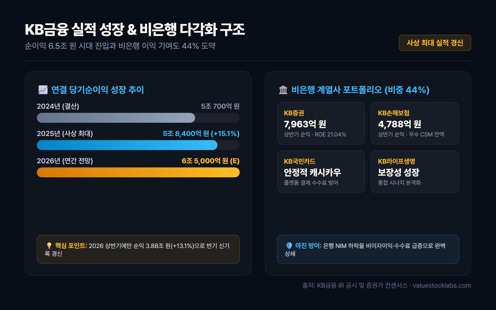
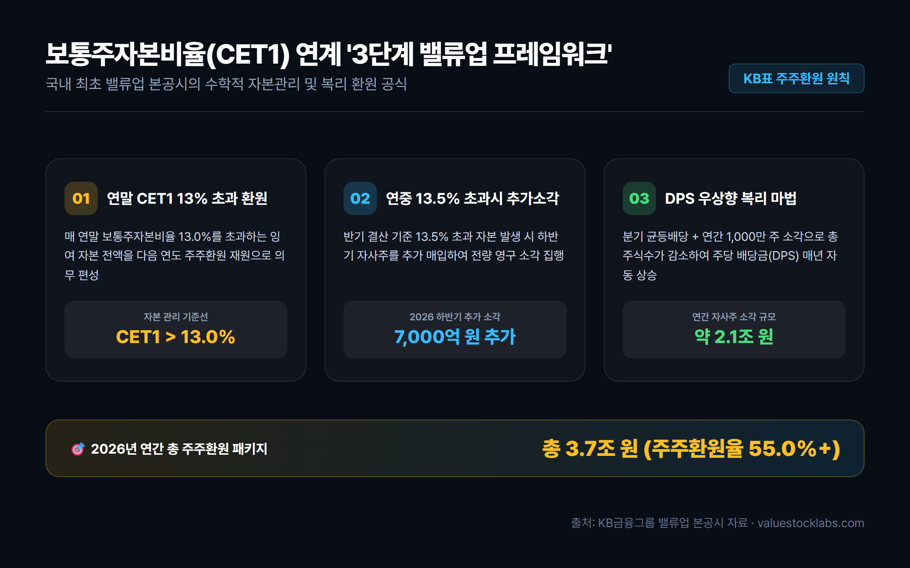
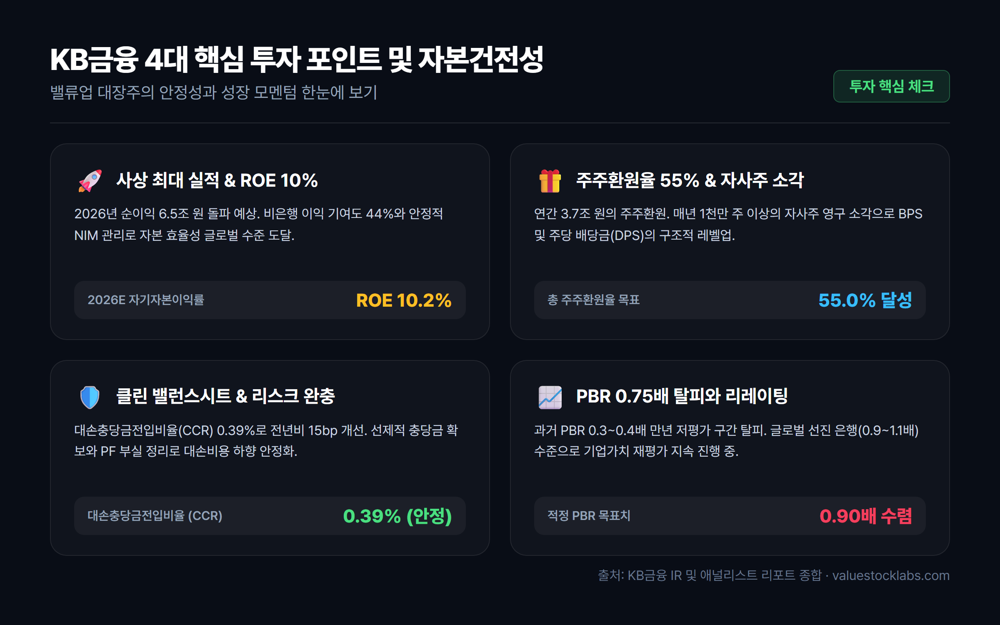
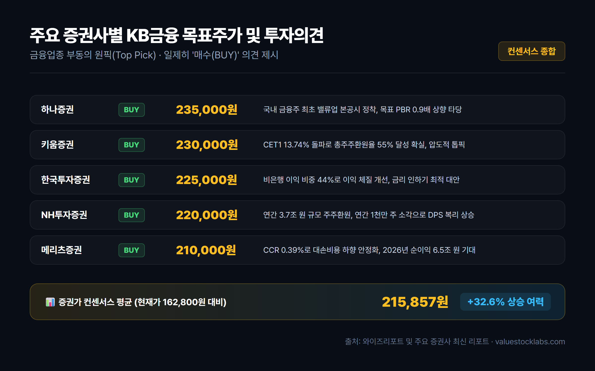

1. 서론: 왜 지금 다시 KB금융인가?
국내 증시에서 오랜 기간 동안 은행주는 '수익성은 좋지만 주가는 움직이지 않는 만년 저평가(Value Trap)'의 대명사로 불려왔습니다. 주가순자산비율(PBR) 0.3~0.4배 수준에 머무르며 심각한 코리아 디스카운트를 겪었던 은행주 섹터의 패러다임이 2024년 정부의 '기업 밸류업 프로그램' 도입과 금융사들의 주주친화적 자본배치 정책 전환을 기점으로 근본적으로 바뀌고 있습니다.
그 중심에 서 있는 절대적인 리더가 바로 KB금융(105560)입니다. KB금융은 국내 상장 금융지주사 중 최초로 명확하고 정교한 밸류업 본공시를 단행하며 글로벌 스탠더드에 부합하는 주주환원 프레임워크를 시장에 공표했습니다. 단순한 구호에 그치지 않고 사상 최대 실적 행진과 분기 균등배당, 연간 1조 원 이상의 자사주 매입·소각을 동반하며 주주가치 제고를 행동으로 증명하고 있습니다.
2026년 기준 주가 16만 원대, 시가총액 58조 원을 넘어서며 코스피 최상위권의 위상을 확고히 한 KB금융이 과연 추가적인 밸류에이션 리레이팅(Re-rating)을 통해 주가 20만 원 고지에 안착할 수 있을지, 핵심 실적과 자본 구조, 주주환원 지표를 하나씩 살펴보겠습니다.
2. 실적 분석: 사상 최대 순이익과 비은행 포트폴리오의 도약
KB금융의 가장 큰 강점은 경기 변동과 금리 변동성에 흔들리지 않는 강력하고 다변화된 이익 체력입니다.
① 2025~2026년 실적 성장 추이
KB금융은 2025년 연결 당기순이익 5조 8,400억 원(전년 대비 +15.1%)을 기록하며 창사 이래 최대 실적을 달성했습니다. 과거 은행 실적의 발목을 잡았던 홍콩 H지수 ELS 손실 배상 등 일회성 비용 요인이 완벽히 소멸되었고, 이자이익과 비이자이익이 고르게 성장한 결과입니다.
성장세는 2026년에도 이어지고 있습니다. 2026년 상반기에만 누적 순이익 3조 8,846억 원(+13.1% YoY)을 달성하여 반기 기준 사상 최대 실적을 새롭게 갈아치웠으며, 연간 순이익 컨센서스는 6조 5,000억 원 수준으로 상향 조정되고 있습니다.

② 비은행 계열사의 약진 (이익 기여도 44%)
시중은행 중심의 타 금융지주들과 달리 KB금융은 비은행 부문에서 독보적인 경쟁력을 갖추고 있습니다. 2026년 상반기 기준 그룹 전체 당기순이익 중 비은행 계열사가 차지하는 비중은 44%에 달합니다.
- KB증권: 자본시장 활황과 WM(자산관리), IB 수수료 수익 확대로 상반기 순이익 7,963억 원(ROE 21.04%)을 창출하며 그룹 전체 순이익의 21%를 견인했습니다.
- KB손해보험: IFRS17 회계기준 도입 이후 우수한 CSM(계약서비스마진) 잔액을 기반으로 상반기 4,788억 원의 안정적인 순익을 더했습니다.
- KB국민카드 및 KB라이프생명: 결제 수수료 방어와 보장성 보험 신계약 확대로 탄탄한 현금흐름을 창출하고 있습니다.
| 구분 | 2024년 (결산) | 2025년 (결산) | 2026년 상반기 (실적) | 2026년 연간 (E) |
|---|---|---|---|---|
| 연결 당기순이익 | 약 5.07조 원 | 5.84조 원 | 3.88조 원 | 약 6.50조 원 |
| 비은행 이익 비중 | 38.6% | 40.2% | 44.0% | 43~45% |
| 그룹 NIM (순이자마진) | 2.05% | 1.98% | 1.94% | 1.92~1.94% |
| 그룹 ROE (자기자본이익률) | 9.1% | 9.6% | 10.2% | 9.8~10.0% |
| 비용효율성 (CIR) | 38.4% | 37.1% | 36.2% | 36.0% 안팎 |
한국은행의 기준금리 인하 기조 속에서 은행 NIM(순이자마진)이 소폭 하락(상반기 국민은행 NIM 1.74%)했음에도 불구하고, 비은행 수수료 수익과 채권 트레이딩 이익이 이자이익 감소분을 초과 달성하며 그룹 전체 이익 레벨을 한 단계 끌어올렸습니다.
3. 밸류업의 핵심: 보통주자본비율(CET1) 연계 주주환원 프레임워크
KB금융 주가 상승의 가장 직접적인 기폭제는 바로 시장의 신뢰를 얻은 정교한 주주환원 메커니즘입니다. 과거 은행들은 경영진의 재량에 따라 배당금을 들쭉날쭉 지급했으나, KB금융은 국내 최초로 수학적 공식에 가까운 '자본관리 프레임워크'를 본공시했습니다.

① 3단계 주주환원 작동 원리
- 연말 CET1 비율 13.0% 초과 자본 전액 환원: 매년 말 기준 바젤III 보통주자본비율(CET1)이 13.0%를 초과할 경우, 초과분 전액을 다음 해 연간 주주환원(현금배당 + 자사주 매입·소각) 재원으로 의무 투입합니다.
- 연중 CET1 비율 13.5% 초과 시 하반기 추가 자사주 매입·소각: 반기 실적 발표 시점에서 CET1 비율이 13.5%를 넘어설 경우, 위험가중자산(RWA) 성장을 감안한 잉여 자본으로 하반기 자사주를 추가 매입하여 전량 소각합니다. 2026년 상반기 말 CET1 비율은 13.74%를 기록하여 하반기 7,000억 원의 추가 소각이 즉각 발표되었습니다.
- 분기 균등배당과 주당배당금(DPS) 우상향의 복리 마법: 연간 배당총액을 고정하거나 늘린 상태에서 매년 약 1,000만 주 이상의 자사주를 영구 소각함에 따라, 전체 발행주식 수가 줄어들어 주주가 손에 쥐는 주당 배당금(DPS)은 실적 변동과 무관하게 구조적으로 매년 우상향하게 됩니다.
② 주주환원율 및 환원 규모 추이
| 연도 | 보통주자본비율(CET1) | 현금배당 총액 | 자사주 매입/소각 | 총 주주환원액 | 총 주주환원율 |
|---|---|---|---|---|---|
| 2023년 | 13.58% | 1.16조 원 | 0.57조 원 | 1.73조 원 | 37.5% |
| 2024년 | 13.60% | 1.25조 원 | 0.82조 원 | 2.07조 원 | 40.8% |
| 2025년 | 13.67% | 1.45조 원 | 1.60조 원 | 3.05조 원 | 52.4% |
| 2026년 (E) | 13.74% | 약 1.60조 원 | 약 2.10조 원 | 약 3.70조 원 | 55.0% 이상 |
2025년 기준 총주주환원율 52.4%를 달성한 데 이어, 2026년에는 연간 3조 7,000억 원에 달하는 환원 규모를 바탕으로 주주환원율 55% 돌파가 확실시되고 있습니다. 이는 미국이나 유럽의 톱티어 글로벌 은행들과 어깨를 나란히 하는 수준입니다.
4. 자산건전성 및 밸류에이션: PBR 0.7배 돌파와 리레이팅 가능성

① 대손충당금 안정화와 건전성 방어
주주환원율을 끌어올릴 수 있는 근원적인 배경에는 안정적인 자산 건전성이 있습니다.
- 대손충당금전입비율(CCR): 2026년 상반기 그룹 CCR은 0.39%로, 전년 동기 대비 약 15bp 큰 폭 개선되었습니다. 2023~2024년 동안 부동산 PF 및 고금리 취약 차주에 대해 4조 원 이상의 충당금을 보수적으로 쌓아둔 덕분에 추가 부실 전입 부담이 대폭 낮아졌습니다.
- 고정이하여신(NPL) 비율: KB국민은행의 NPL 비율은 0.34%로 업계 최저 수준을 유지 중이며, 부실 우려 부동산 PF 익스포저는 엄격한 금융당국 가이드라인 하에 이미 대손 상각 및 매각 처리를 마무리했습니다.
② PBR 리레이팅과 글로벌 피어 비교
현재 KB금융의 12개월 선행 PBR은 약 0.72~0.78배, PER은 약 8.2~8.8배 수준에서 거래되고 있습니다.
과거 0.3~0.4배에 머물던 극단적 저평가 국면은 벗어났지만, 여전히 JP모건(PBR 1.8배), 웰스파고(1.3배), 일본 미쓰비시UFJ(0.9~1.0배) 등 해외 선진국 금융주와 비교하면 여전히 할인 폭이 큽니다. 연간 순이익 6.5조 원, ROE 10% 유지, 주주환원율 55%라는 실질적 지표를 고려할 때, 시장 전문가들은 KB금융의 적정 PBR이 0.9배 이상으로 수렴해야 한다고 평가합니다.
5. 투자 시 반드시 짚어야 할 3대 리스크 요인
투자자라면 낙관적인 전망 이면에 자리 잡은 잠재적 위험 요인도 면밀히 점검해야 합니다.
- 기준금리 추가 인하와 은행 이자이익 둔화 압력: 한국은행의 추가 금리 인하 사이클이 본격화될 경우 대출금리 하락으로 인한 은행 NIM 압박이 심화될 수 있습니다. 비은행 수수료 이익이 이를 얼마나 지속적으로 방어할 수 있을지가 핵심 관전 포인트입니다.
- 정부의 가계대출 총량 규제 및 스트레스 DSR 확대: 수도권 집값 안정화를 위한 대출 규제 강화로 주택담보대출 성장률이 둔화될 수 있습니다. 대기업 및 우량 중소기업 대출 중심의 성장 전략이 요구됩니다.
- 금융권 사회적 책임 요구와 상생금융 비용: 사상 최대 실적 발표 시마다 불거지는 횡재세 논란이나 상생금융 출연 압박 등 정책적 규제 리스크가 잔존합니다.
6. 증권사별 목표주가 및 투자 결론

국내 주요 증권사들은 KB금융에 대해 일제히 '매수(BUY)' 투자의견을 제시하며 금융업종 내 부동의 최선호주(Top Pick)로 꼽고 있습니다.
| 증권사 | 투자의견 | 목표주가 (원) | 핵심 투자 포인트 요약 |
|---|---|---|---|
| 하나증권 | BUY | 235,000 | 국내 금융주 최초 밸류업 본공시 정착, 목표 PBR 0.9배 상향 타당 |
| 키움증권 | BUY | 230,000 | CET1 13.74% 돌파로 총주주환원율 55% 달성 확실, 압도적 톱픽 |
| 한국투자증권 | BUY | 225,000 | 비은행 이익 비중 44%로 이익 체질 개선, 금리 인하기 최적 대안 |
| NH투자증권 | BUY | 220,000 | 연간 3.7조 원 규모 주주환원, 연간 1천만 주 소각으로 DPS 복리 상승 |
| 메리츠증권 | BUY | 210,000 | CCR 0.39%로 대손비용 하향 안정화, 2026년 순이익 6.5조 원 기대 |
| 컨센서스 평균 | BUY | 215,857 | 현재 주가(162,800원) 대비 약 +32.6% 상승 여력 제시 |
💡 투자 총평
KB금융은 단순한 고배당 금융주를 넘어, '사상 최대 실적 + 연간 주주환원율 55% + 자사주 영구 소각 + 비은행 포트폴리오 다각화'라는 4박자를 완벽하게 갖춘 대한민국 대표 가치성장주로 진화했습니다. 금리 인하 사이클 진입에도 불구하고 견고한 비이자이익과 철저한 리스크 관리, 그리고 13%를 초과하는 자본을 아낌없이 주주에게 돌려주는 예측 가능한 자본정책은 중장기 가치투자자에게 가장 매력적인 투자 기회를 제공합니다.